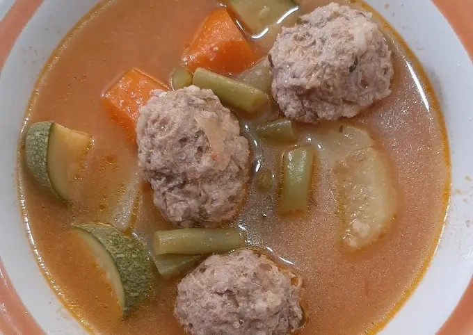

RECETA DE ALBÓNDIGAS
Compartida por Teresa López
timer
person
Ingredientes
- ½ kilo carne molida
- 1 pza de huevo
- 4 cucharadas de arroz crudo
- 1 ramito de hierbabuena
- 2-3 pzas de tomate
- Verduras al gusto (calabacitas, chayotes, zanahorias, papas)
- 1 pza de hueso de pollo
- 1 trozo de cebolla
- sal y ajo al gusto
Procedimiento
- Pela y corta la verdura en trozos no muy pequeños.
- Aparte coloca 1 litro de agua a hervir, agrega unos huesos de pollo, ramas de hierbabuena, 2 o 3 tomates, el trozo de cebolla y ajo.
- Mientras hierve coloca carne, huevo, sal, ajo, hierbabuena picada, arroz bien lavado y cebolla picada en un molde.
- Mezcla muy bien la carne y forma las albóndigas para esto ya debió hervir el caldo.
- Agrega las albóndigas y zanahoria.
- Es momento de retirar tomate, cebolla, ajo. Esto lo vamos a licuar y regresar al caldo.
- Pasados 8 minutos, agregar el resto de las verduras y dejar hervir hasta que las verduras y carne se cuezan.
- Sirve caliente.
